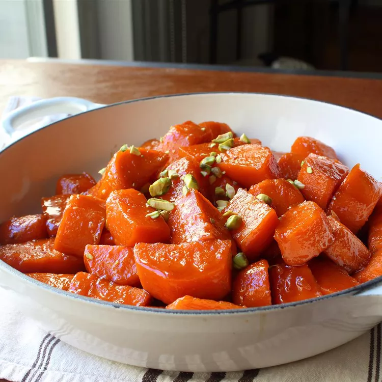

Chef John's Candied Yams
By John Mitzewich

This is my recipe for candied yams. Sure, everyone knows orange-fleshed sweet potatoes aren't really yams, but it makes for a shorter name.
I'm not a huge sweet side dish person, but I make an exception for this recipe that uses lemon instead of orange juice as a sweetener.
Ingredients
Yields 8 servings
Yams
- "3 tbps kosher salt"
- "2 quarts cold water"
- "3 lbs orange-fleshed sweet potatoes, peeled and cut into 2-inch pieces"
- "1 cup whole milk"
- "3/4 cup melted beef fat"
Glaze
- "1 cup brown sugar"
- "4 tbps unsalted butter"
- "1/2 cup freshly squeezed lemon juice"
- "1/4 cup maple syrup"
- "1/2 tsp ground ginger"
- "1/4 tsp ground cinnamon"
- "1 pinch cayenne pepper"
- "Salt to taste"
- "Chopped pistachios, pecans or walnuts for garnish"
Steps
- "1. Stir salt into 2 quarts of cold water in a large pot. Transfer sweet potato pieces to the pot and place over high heat; bring to a simmer.
Reduce heat to medium-low and simmer until potatoes are not quite tender but still cooked, 5 to 7 minutes. Use the tip of a knife to test for doneness. Drain."
- "2. Place brown sugar, butter, lemon juice, maple syrup, ginger, cinnamon, cayenne, and pinch of salt in a skillet.
Place over medium-high heat, stirring until glaze ingredients melt and start bubbling. Continue cooking, stirring occasionally, until mixture begins to thicken, 4 to 6 minutes."
- "3. Transfer drained sweet potatoes to a skillet. Increase heat to high; cook and stir until potatoes are coated with glaze and very tender, and glaze has thickened, 5 to 8 minutes.
Transfer to serving dish; garnish with chopped nuts."